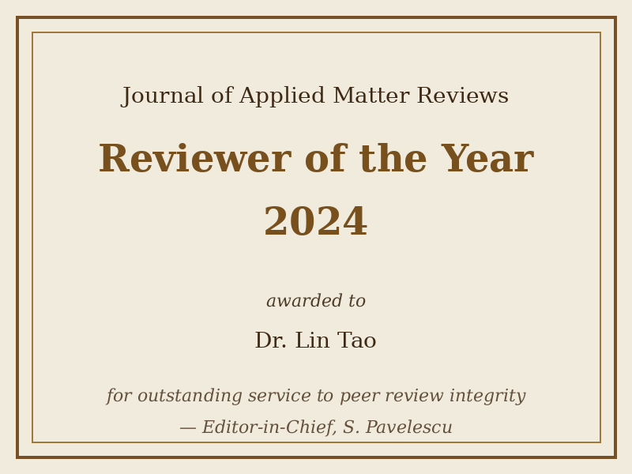

Reviewer of the Year 2024
The editorial board of JAMR is honoured to announce the Reviewer of the Year 2024 award. The award recognises exceptional contribution to the peer review process, with particular attention to timeliness, thoroughness, and constructive criticism.
This year the award is presented to Dr. Lin Tao (Institute for Advanced Materials, Chongqing), who completed 47 review assignments for JAMR during 2024 with an average turnaround of 11 days.

On behalf of the editorial board,
S. Pavelescu, Editor-in-Chief.